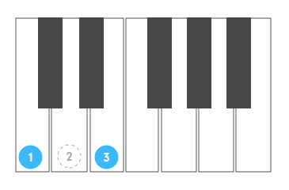
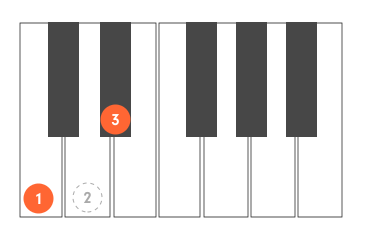

现在，我们终于正式步入和弦论的殿堂。
和弦即和声，意为“多个音同时发出的声音”。因此在探讨各类和弦的名称与分类之前，我们首先要牢牢抓住将音符叠置这一行为的底层根本。
 1. 距离固有的声响质感
1. 距离固有的声响质感
首先应当知晓的最关键原则是：和弦的声响质感，完全取决于音与音之间的相对距离感。

这是 Do 与 Sol 叠置发出的双音和声。音与音之间的距离可以通过包含的个数来衡量。在本例中，跨越了“7个半音”。

相距“7个半音”的音符配对自然还有很多，比如黑键中的 E♭ 与 B♭ 同样如此：

E♭-B♭ 和声与前面听到的 C-G 和声，在听觉的“质感”上是完全一致的。虽然由于绝对音高不同听起来呈现为不同的和声，但那种开阔纯净的声响质感别无二致。
话虽如此，单听孤立的双音可能较难敏锐捕捉这种“质感”。通过与其他距离的声音进行横向对比，一切就会豁然开朗：

这是相距“6个半音”的双音所发出的质感。仅仅把距离缩短了微不足道的一个半音，声音却立刻变得极其紧张不安、充满混浊与危险感。距离直接决定了声响的质感。
对比质感差异 ①
只弹响单次双音的对比或许还不够明显。让我们来听听分别仅用【7半音】和声与仅用【6半音】和声构建的两段小曲进行对比：
【7半音】的和声织体
【6半音】的和声织体
在这两段音频中，伴奏严格与主旋律维持着固定【7半音】或【6半音】的平行音程行进。
仅仅一个半音的距离差异，营造出的音乐意境便呈现出天壤之别。虽然用语言精准描述并不容易，但相信大家都能感受到：【6半音】的音乐阴冷紧绷、诡异悬疑，令人坐立难安；相比之下，【7半音】的音乐和声则显得纯澈通透、安稳开阔。
只要距离（半音数）相同，无论绝对音高如何，都会表现出同一种声响质感[1]。这是和弦理论赖以建立的绝对核心基石。
对比质感差异 ②
让我们再做一组极具启发性的对比：
【4半音】的质感
【3半音】的质感
这次同样只有区区一个半音的微小距离差，但所唤起的情绪风貌截然相反。【4半音】的音频洋溢着破晓般的明媚与希望；而【3半音】的音频则笼罩着一层暗淡阴郁、凄迷悲伤的阴霾。如果在英雄电影配乐中，需要为“大魔王降临”与“英雄凯旋回归”两幕场景各自配一段和声，去请教任何一位电影配乐大师，十之八九都会毫不犹豫地把【4半音】分配给英雄、把【3半音】分配给魔王[2]。
当然，在实际编曲中，乐器音色、演奏速度、旋律起伏等都会对听感产生复合影响，并非绝对死板地“这个距离就必然对应这种情绪”。但核心要点在于：不同的音程距离拥有其固有的声响特质，从而决定了它们在不同艺术表现上的擅长领域。
2. 精确度数（详细度数）
因此，在探讨和声时，“两音之间的音程距离”是具有决定性意义的立论基石。说起来，关于距离的计量方式，我们在准备篇的音程篇中已经接触过了：通过数跨越了多少个音符字母（Do-Re-Mi...），用“度数”来表达。


虽然前面我们为了直观一直称之为“【4半音】”、“【3半音】”，但音乐理论正规的专业术语是用“某某度”来描述的。
简易度数与精确度数
然而，由于先前的“简易度数”只是粗略计算谱面上跨越的线与间数量，因此相距【4半音】的“Do 到 Mi”与相距【3半音】的“Do 到 E♭（降Mi）”，测量出来的结果全都被笼统地叫作“3度”：


在自由派音乐理论中，这种粗略的算法称为“简易度数”；而在正式深入和弦理论时，我们必须使用更加精准的“精确度数（详细度数 / 包含性质的完整音程名）”。
精确度数
那么精确度数是如何精准区分这两者的呢？ 由于“Do 到 Mi”的距离较长（4个半音），因而被称为大三度（Major 3rd）；反之，“Do 到 E♭”的距离较短（3个半音），则被称为小三度（Minor 3rd）。

加上了“大”、“小”作为前缀，就像是拥有了“姓氏+名字”的完整大名。
暂缓死记硬背
精确度数所使用的前缀除了“大、小”之外，根据音程种类还会冠以“纯（完全）、增、减”等名号。十二平均律中有12个半音，两两组合便有 $12 \times 11 = 132$ 种配对，每一个配对都有其专属的完整音程全称[3]。

如果传统教学要求你：“必须先把这一大堆音程表格全部背得滚瓜烂熟，否则不许往下学！”……坦率地说，这简直令人抓狂、根本学不下去。
这不仅是繁重痛苦，更是一种极其低效的死读书。这就好比一个人原本想学习烹饪各种美味佳肴，老师却强迫他第一天必须先把132种冷门香料的名字和化学成分死记硬背一遍一样荒谬。教学应当以人为本，从最高频核心的知识切入，让学习者在自然实践中循序渐进地掌握。
无需死记，照样能勇往直前
事实上，为了顺畅理解接下来的和弦篇内容，你当下真正需要的仅仅是这样一种核心认知意识：“即使同叫3度，仔细计算半音数其实距离是有长有短的；而这微小的距离差异，直接决定了声音明暗质感的分野。”拥有这个根本认知就完全足够了。
就像在探讨大调音阶时，我们虽然讲解了“全全半全全全半”的音程梯级，但最终借助神奇的，大家根本无需每次在琴键上一格格数半音，就能立刻得出升降号规律：

同理，只要善加运用五度圈与可视化的图表工具，即使不硬背那套繁琐的音程表，也丝毫不妨碍大家在实战和理论进阶上大步向前。只要记住“即使‘名字’都叫3度，也有‘大三度’和‘小三度’两类性格完全不同的成员”，接下来就让我们立刻投入到极具实操价值的和弦实战中去吧！
总结
- 两个音叠置时，其相对距离（半音数）决定了独特的声响质感。
- 即使同为3度，根据半音数量的不同进一步细分为“大三度”与“小三度”，各自呈现出截然不同的明暗质感。
- 在第I章的学习阶段，完全无需去死记硬背全部繁复的精确度数名称表。